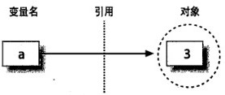
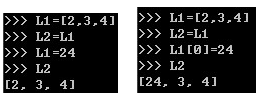
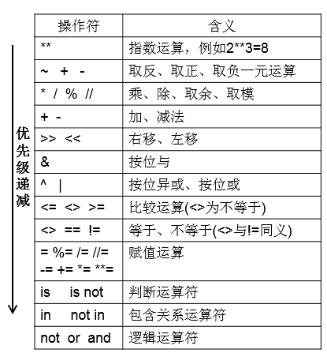
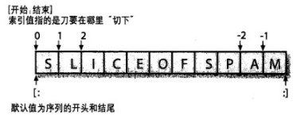
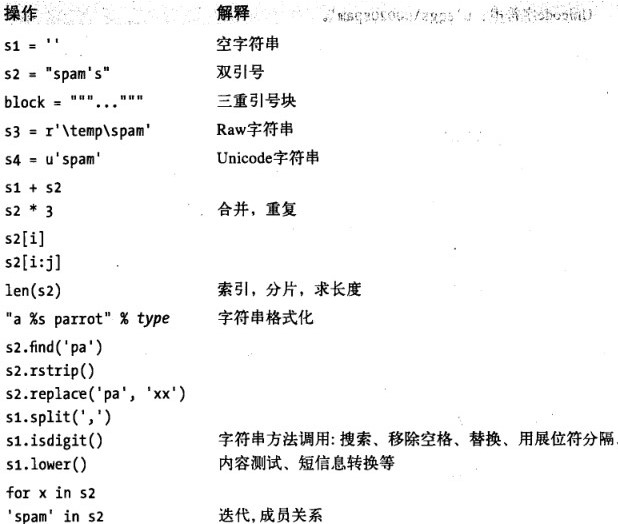
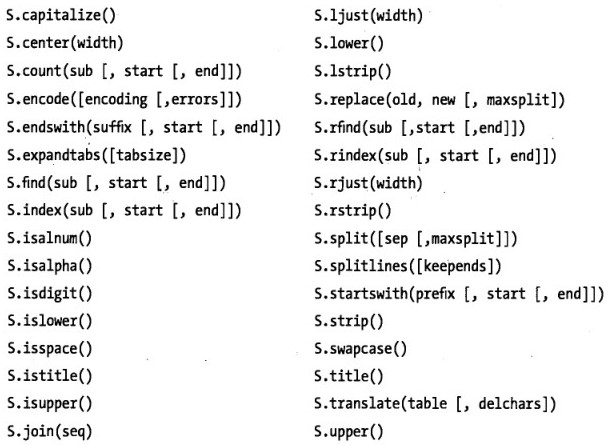
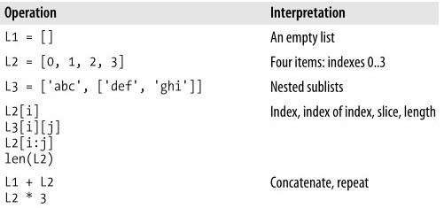
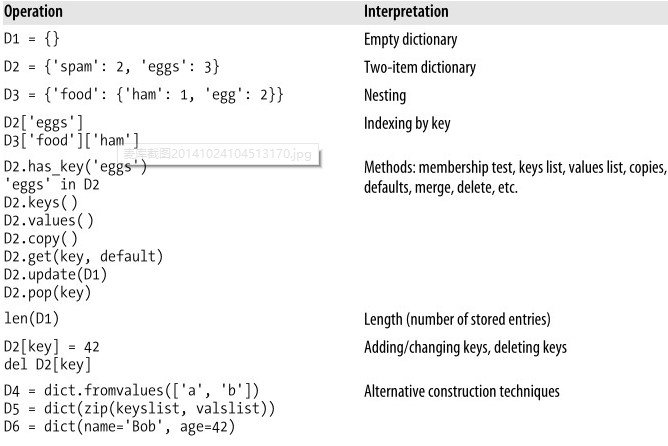
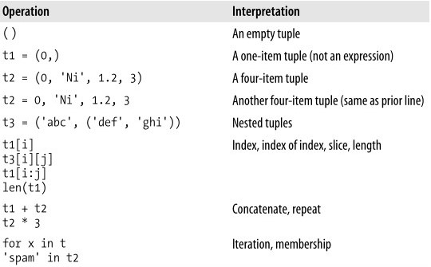

1.前提知识
文件开头
#!/usr/bin/python
指定编译器。指定的编译器会来解释该python文件。# -*-encoding:utf-8 -*-
指定文件用utf-8编码。
保留字
and assert break class continue def del elif elseexcept exec finally for from global if import in islambda not or pass print raise return try while with yield
缩进和语句
缩进用Tab，严格要求。语句结束没有分号，利用缩进标识一个语句。
查找帮助文档
python文档方便、丰富，主要通过dir 和help查看帮助文档。
例子：查阅列表 dir(list),看到列表有extend方法，继续查看：help(list.extend)
其他
注释语句用#开头；
引用使用成对的单引号、双引号、三引号标识；
单行多语句，用分号隔开。
2.动态类型
python的变量使用前不需要声明，这是python动态类型的体现。>>>a=3
变量a和数值对象3存储在内存中不同位置，a是对3的引用。
类型与对象相关，与变量无关。


共享引用和在原处修改：
有时为了避免引用同一对象，需要使用完全的拷贝。
python里达到拷贝的方法有如下：
- 分片表达式L[:]能够复制整个序列。
- 字典的copy方法D.copy()复制字典。
- copy标准库模块能够生成拷贝。
3.操作符优先级

4.数据类型
python主要的内置数据类型有：数字、字符串、列表、元组、字典、文件，等。
字符串、列表、元组都属于序列。通用的序列操作都适用。
假如s="SLICEOFSPAM" s2="1234"
通用序列操作如下：
索引和分片：>>> s[0:3]
‘SLI’
字符串反转：>>> s[::-1]
‘MAPSFOECILS’
分片图示如下：

字符串
字符串是不能修改的。
字符串格式化
1 | >>> "%s,open the %s"%("Bob","door") |
字符串转义
比如open('C:\new\test.txt',r) 会被识别为含有换行符和制表符。
为了正常使用，有两个办法：
可以转义：open('C:\\new\\test.txt',r)
也可以raw字符串：open(r'C:\new\test.txt',r)
raw字符串：如果字母r出现在字符串的第一个引号前面，那么就关闭\的转义机制。
常见的字符串操作

常见字符串方法

5.列表字典和元组
列表
用中括号表示。L=[12,'ab',3]
可以用list建立列表：list("Hello")
列表基本操作

字典
用大括号表示。以键值对(key:value)的形式出现。
字典用key来索引。d={"Hubei":"Wuhan","Jiangsu":"Nanjing"}
可以用dict创建字典:dict([('age':42),('name':'Bob')])
字典基本操作

元组
用小括号表示。元组内容不可变。
元组常用操作

6.控制语句
if语句例子：1
2
3
4
5
6if a<10:
print "a<10"
elif a>10:
print "a>10"
else:
print "a=10"
for语句例子：1
2for x in range(0,5):
print x
while语句例子：1
2
3
4x=0
while x <10:
x+=1
print x
这些控制语句都是可以迭代的。
pass语句：空语句，什么也不做。相当于C语言里的分号语句。
另外还有，continue语句，break语句等。
7.函数python
7.1 函数示例
1 | def add(a,b): |
函数说明档是字符串；函数返回值可有可无；
7.2 参数作用域
函数内为参数赋予新值，不改变外部变量的值。1
2
3
4
5
6
7
8
9
10
11
12def hello(name):
name = 'Bob'
print "hello,",name
name = "Jim"
hello(name)
print ('Now name is:%s')%name
---python output---
hello, Bob
Now name is:Jim
-------------------
但是，如果参数引用的是一些列表，字典等，就会改变结果。
1 | def hello(names): |
当两个变量同时引用一个列表，实际是操作的同一个列表。
局部变量与全局变量同名：
函数内改变局部变量值，不影响全局变量。
如果函数内要访问全局变量，使用global标识全局变量名。
7.3 参数位置和默认值
1 | def hello(name,greeting="Ni hao"): |
函数定义里，无默认值的形参在前。
函数调用时，传参方法多种。见代码
7.4参数传递
普通参数：1
2
3
4
5
6def param_show(*param):
print param
param_show(12,'ab',3.21)
-------- python ----------
(12, 'ab', 3.21)
----------------------------
这样参数放在元组里传递进来。
关键字参数：1
2
3
4
5
6def param_show(**param):
print param
param_show(a=12,b=15,c=20)
---------- python ----------
{'a': 12, 'c': 20, 'b': 15}
----------------------------
关键字参数作为字典传递进来。
7.5 匿名函数lambda
>>>x=lambda a,b,c:a+b+c
>>>x("He","is","dog")
>>>He is dog
8.捕捉异常python
详细：先import exceptions，再help(exceptions)
最常见形式：1
2
3
4
5
6try:
x=10
y=0
print x/y
except ZeroDivisionError:
print "Divisor can't be zero."
在try里执行，在exception里捕捉异常，进行处理。
很完整的用法：1
2
3
4
5
6
7
8
9
10
11#-*-encoding:utf-8 -*-
try:
import xxmodule
print y
except (ImportError,NameError),e:
print "Nothing serious.",e
raise
else:
print "else clause"
finally:
print "finally clause"
有异常： try–>excecpt–>finally
没有异常：try–>else–>finally
except(ImportError,NameError)可以捕捉两个异常之一，但是只捕捉最先引发的异常。
except 后面加e，可以将系统异常信息存储，打印出来。
捕捉并处理了异常后，仍可将该异常再次引发，在try语句块执行完后，系统会处理。
异常是python的一个类object，各种触发的异常都是exceptions子类的实例。
下面是运行结果：1
2
3
4
5
6
7---------- python ----------
Nothing serious. No module named xxmodule
finally clause
Traceback (most recent call last):
File "exceptions.py", line 3, in <module>
import xxmodule
ImportError: No module named xxmodule
9.文件操作python
详细文档：help(file)
9.1读操作
1 | f=open("data.txt",'r') #读方式打开文件 |
9.2写操作
1 | f=open("data.txt",'w')# 常用r+以读写方式打开文件 |
9.3文件迭代器
1 | for line in open("data.txt"): |
10.类和面向对象 python
类class：是实例instance的生产工厂。
类方法：class顶层定义的函数。
类属性：class顶层定义的变量。
实例属性：类方法中赋给self的属性。
self参数：类方法函数的第一个参数，它代表具体的实例对象。
init:构造器：实例创建时，python就会调用它。
继承搜索顺序：1，实例对象；2，创建实例的类；3，对象树较高的超类，从左至右。
示例代码：1
2
3
4
5
6
7
8
9
10
11
12
13
14
15
16
17
18
19
20
21
22
23
24#encoding=utf-8
class human(): #超类定义
def __init__ (self,legs): #构造器
self.legs = 2 #实例属性
def getlegs (self): #类方法
return self.legs
class boy(human): #子类定义
claim='This is boy class.' #类属性
def __init__ (self,legs): #构造器
human.__init__(self,legs)
def setname(self,names): #子类方法
self.names = names #实例属性
def setclaim (self,strings):
self.claim = strings #实例属性
if __name__ == '__main__':
xboy = boy(2) #生成实例
print xboy.legs #打印实例属性
xboy.setname('Jim') #调用实例方法设置实例属性
print xboy.names #打印实例属性
print xboy.claim #打印实例属性，不存在，则继承同名类属性
xboy.setclaim('This is boy instance') #用实例方法设置实例属性
print xboy.claim #打印实例属性
输出结果如下：1
2
3
4
5---------- python ----------
2
Jim
This is boy class.
This is boy instance
11.python的模块和包
模块对应python文件
比如import time就是导入的time.py文件。
常见导入方式：import ModuleNamefrom ModuleName import Method
实例：>>>import urllib>>>urllib.open("www.xxx.com")
如果import的名字太长，可以用import longlonglongname as shortname
模块搜索路径
在导入模块时，依次搜索主目录，PYTHONPATH目录，标准库目录, .py文件目录。
python模块的导入，只会被载入和执行一次。除非使用reload再次导入。
python的包
也可以将一个目录作为包导入。目录里要有init.py文件。它完成包的一些初始化工作。
包导入：import dir1.dir2.mod。表示导入目录dir1下的目录dir2下的mod.py。这里dir1和dir2下都要有__init__.py文件。
__name__和__main__：
文件如果是以顶层文件执行，则启动时，__name__就被设置为“__main__”;
文件如果是被作为模块导入，则被载入时__name__就被设置为模块名称。
所以，编写一个文件，常常用到if来判断：1
2if __name__ == '__main__':
run as main.
12.python的命名空间、作用域
直接通过代码例子说明如下：
#encoding=utf-8
#manynames.py
X=11 #模块全局变量X
def f():
print X #打印全局变量X
def g ():
X=22 #函数局部变量X
print X
class C():
X=33 #类属性C.X
def m (self):
X=44 #类方法局部变量X
self.X=55 #实例属性X
if __name__=='__main__':
print X #11.全局变量X
f() #11.全局变量X
g() #22.函数局部变量X
print X #11.还是全局变量X
obj=C()
print obj.X #33.继承类属性X
obj.m()
print obj.X #55. 实例属性X
print C.X #33. 类属性X